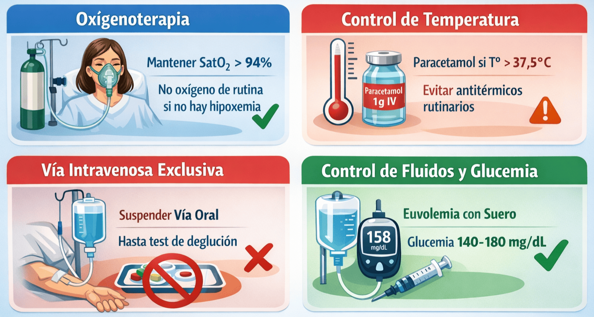
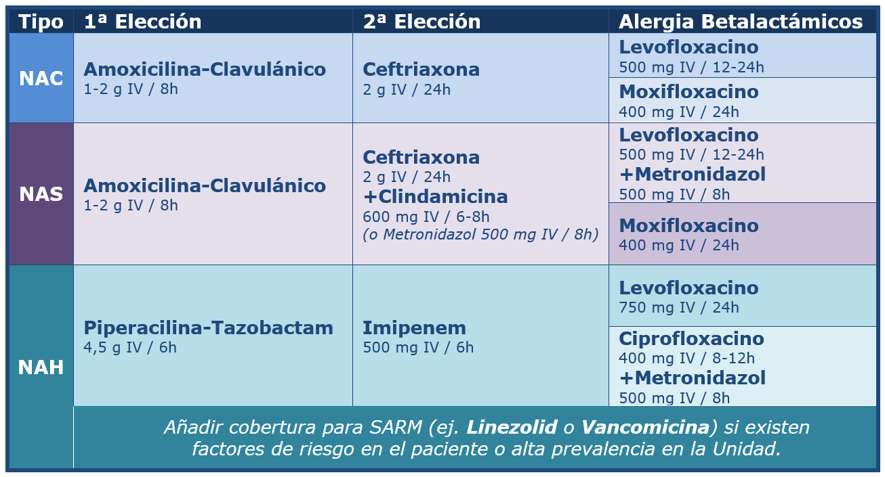

El protocolo de manejo de la infección respiratoria en el ictus agudo se basa en la detección temprana y el tratamiento empírico de la neumonía (siendo la broncoaspiración por disfagia la principal causa subyacente), ya que es un motivo frecuente de fiebre, empeoramiento isquémico y deterioro clínico en estos pacientes.
Evaluación inicial
Debe sospecharse por signos clínicos (tos, expectoración, fiebre, desaturación, crepitantes) y confirmarse mediante pruebas urgentes:
- Radiografía de tórax (preferiblemente portátil).
- Analítica con hemograma, proteína C reactiva y cultivos (esputo, hemocultivos, urocultivo si procede para descartar focos cruzados).
Tratamiento inicial y soporte
- Oxigenoterapia: Administrar oxígeno suplementario estrictamente para mantener una SatO₂ > 94%. No se recomienda el uso de oxígeno de rutina en pacientes sin hipoxemia.
- Control de temperatura: Administrar Paracetamol 1 g IV condicionado a temperatura > 37,5°C para asegurar la normotermia. No pautar antitérmicos de forma rutinaria si el paciente está afebril.
- Vía de administración: En todo paciente con sospecha de neumonía, suspender la vía oral para cualquier fármaco, líquido o alimento hasta que se haya realizado y superado un test formal de deglución. Utilizar exclusivamente la vía intravenosa.
- Control de fluidos y glucemia: Mantener la euvolemia con sueros isotónicos y la glucemia entre 140-180 mg/dL, siguiendo los protocolos generales de la Unidad.

Antibioterapia empírica
No se recomienda la antibioterapia profiláctica, pero ante la confirmación o alta sospecha clínica de infección se debe iniciar tratamiento empírico de inmediato. La elección dependerá del tipo de neumonía, el contexto clínico y los mapas de resistencia locales:
-
NAC (Neumonía adquirida en la comunidad):
-
Amoxicilina/Clavulánico 1–2 g IV/8 h.
- 2ª Elección: Ceftriaxona 2 g IV/ 24 h.
-
Si alergia: Levofloxacino 500 mg IV/12–24 h o Moxifloxacino 400 mg IV/24 h.
-
-
NAS (Neumonía por aspiración):
-
Amoxicilina/Clavulánico 1–2 g IV/8 h.
- 2ª Elección: Ceftriaxona 2 g IV/ 24 h +
Clindamicina 600 mg IV/ 6-8 h (o Metronidazol 500 mg IV/
8 h).
-
Si alergia: Levofloxacino 500 mg IV/12-24 h + Metronidazol 500 mg IV/ 8 h o Moxifloxacino 400 mg IV/ 24 h en monoterapia.
-
-
NAH (Neumonía asociada a hospitalización):
-
Piperacilina/Tazobactam 4.5 g IV/6–8 h.
- 2ª Elección: Imipenem 500 mg IV/ 6 h.
- Si alergia: Levofloxacino 750 mg IV/ 24 h o
Ciprofloxacino 400 mg IV/ 8-12 h + Metronidazol 500 mg IV/
8 h.
-
Añadir cobertura para SARM (Staphylococcus aureus resistente a la meticilina) si existen factores de riesgo en el paciente o alta prevalencia en la Unidad (ej. Linezolid o Vancomicina).
-
